Peel the rumour.
Read underneath.
Underneath turns the noisy stories moving through WhatsApp, X, TikTok and LinkedIn into one checked edition with an end.

Open it, read it,
finish it.
No feed, no pile
The edition is the wall. It has a small number of stories and then it ends.
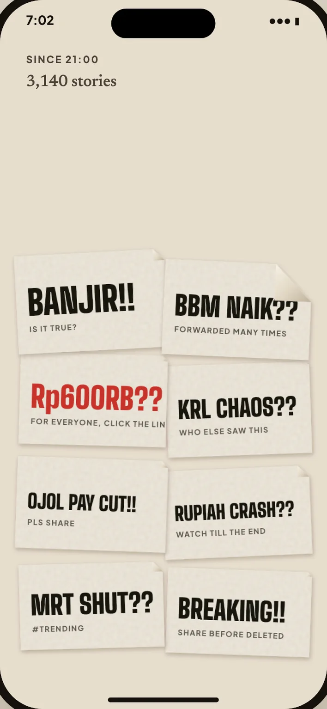
The rumour is the bill
The front says what is going around: "BBM NAIK??" or "Rp600RB??". Red belongs only to that noise.
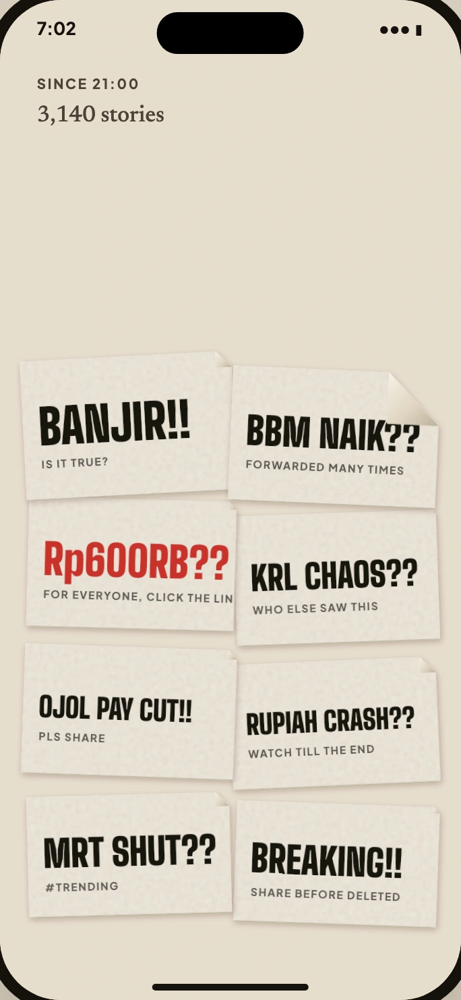
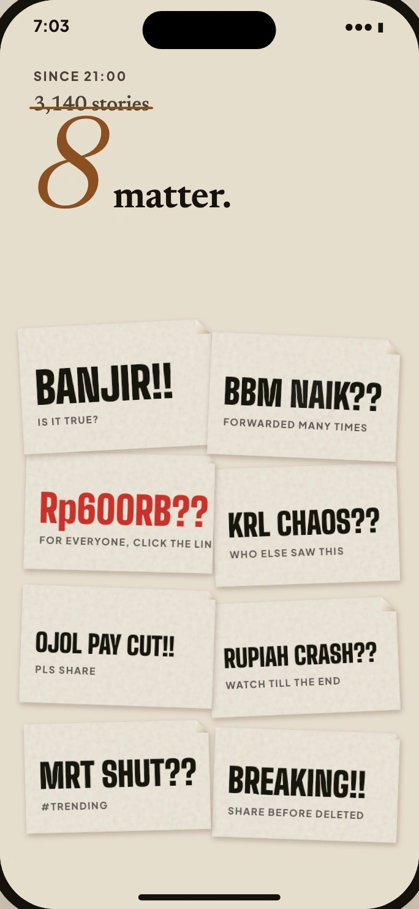
The checked story is underneath
Peel the corner. The bill curls and falls. A calm story appears on fresh whitewash.
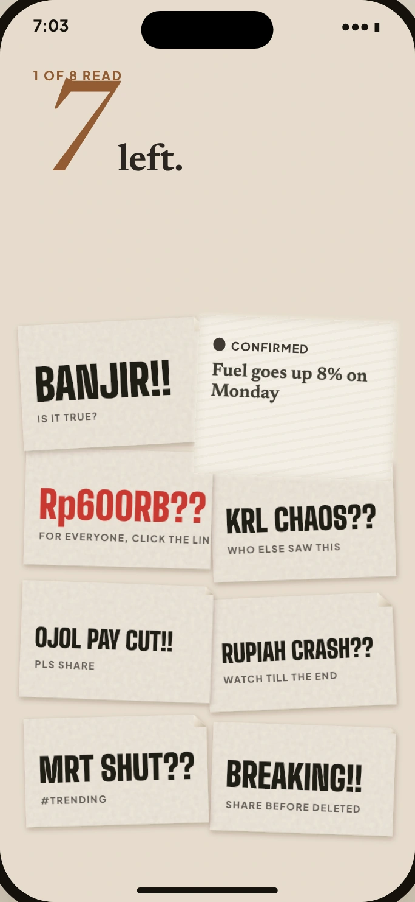
Every story carries its mark
Confirmed, developing, unverified or false is shown by shape and word, never by colour alone.
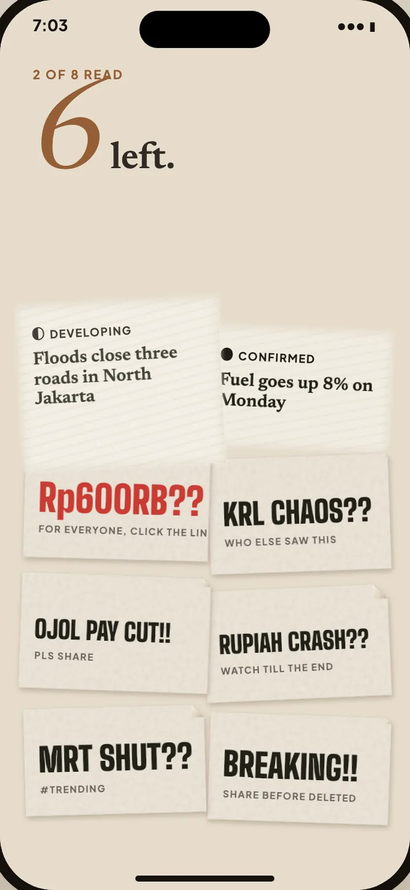
Share the checked version
A share includes the signal and sources, so a story can move without losing its proof.
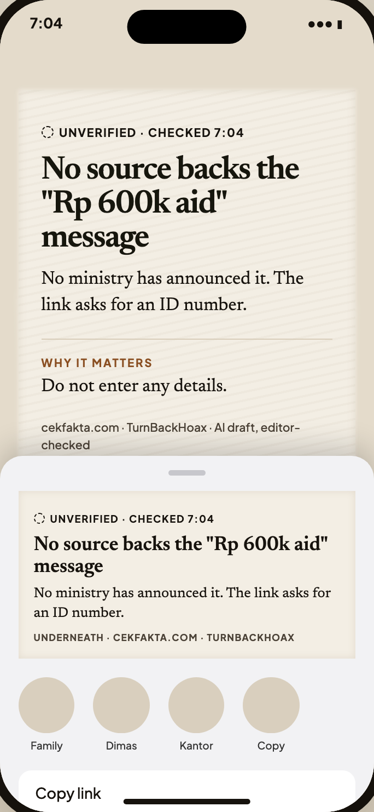
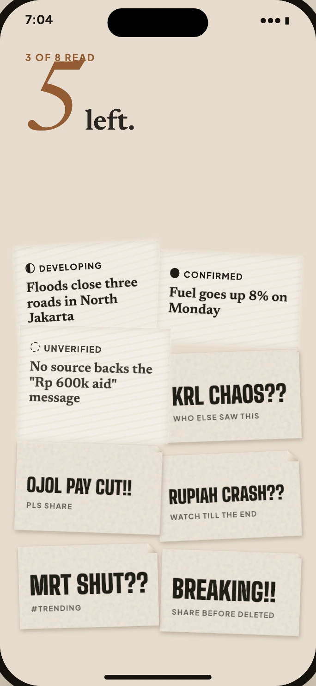
Jakarta and his topics
The first edition is tuned to where he is and what he follows, without an endless recommendation trail.
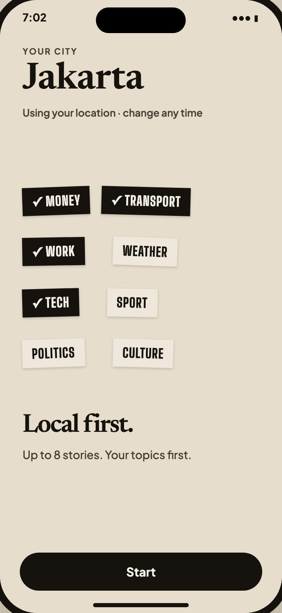
The end is visible
Bills left equals stories left. At the end, morning light leaves a clean wall and the edition painted on it.
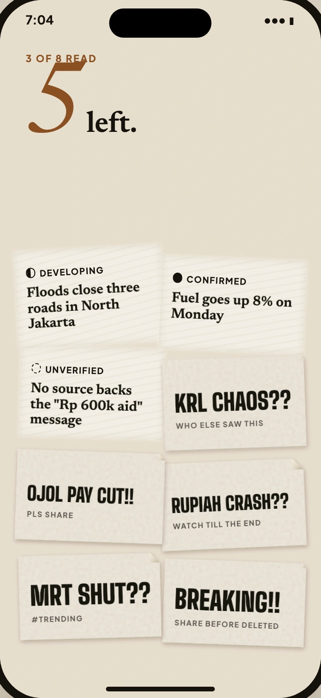
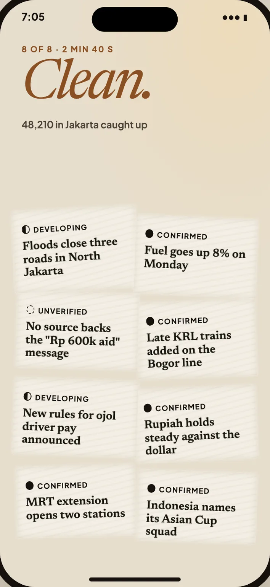
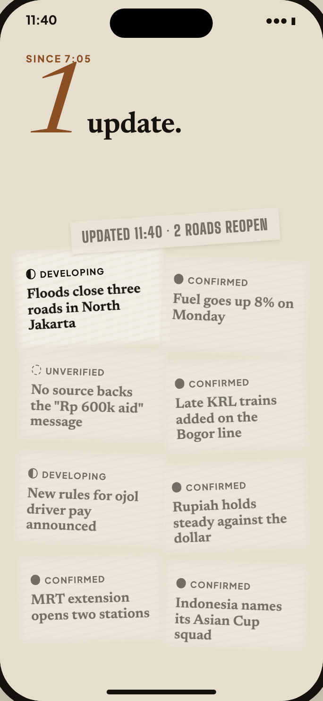
Questions, answered
Who is Underneath for?
A busy young worker in Indonesia who gets news through social feeds and chat, but wants a clear edition he can finish.
Is every story confirmed?
No. Developing and unverified stories can appear, but they are marked clearly with a signal and sources.
Who writes the summaries?
AI can draft them, but the product is designed around editorial approval before anything reaches an edition.
Is it another infinite feed?
No. The edition has a fixed number of stories. Nothing piles up after a few days away.
For a clear head
Finishable
Up to a small number of stories, then the wall is clean.
Marked stories
Every story shows its signal and sources.
No engagement trap
No unread badges, streaks, or endless next story.
Start with tomorrow's edition
Join the waitlist for Underneath.